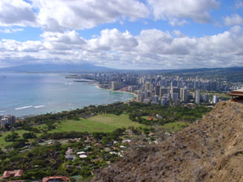
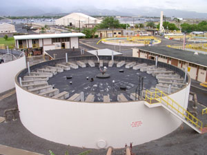
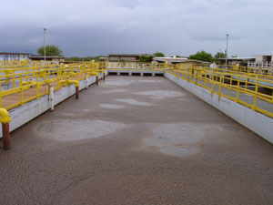

|
June (North American), 2002 Control Engineering
|
| FEATURE ARTICLE |
Kinder, Gentler HMI Simplifies Support at Sanitation Plant in Paradise
'Bells and whistles' mean little when local support is marginal |
David Payne & Read Hayward, DST Controls

Keywords:
Instrumentation and Process Control
Human Machine Interface
HMI Software
|
|
Built in 1970, the wastewater treatment plant at Fort Kamehameha ("Ft. Kam", Pearl Harbor, Hawaii) was recently refurbished, but its legacy human-machine interface (HMI) system was poorly supported locally.
The U.S. Navy wanted to ensure that the HMI system would keep up with on-going plant modifcations and continue processing the 6-million gal/day of wastewater produced by a military and civilian population of more than 50,000.
The treatment process begins as screens remove material from the raw wastewater and discharge them into a compactor. The raw wastewater is then pumped to primary clarifiers for separation of more solid matter. During clarification, skimmers collect scum from the surface and bottom of the clarifier. Next, aeration tanks provide oxygenation to support waste devouring bacteria. Secondary clarifiers then remove most remaining suspended solids. Finally, the wastewater flows through effluent filters, to remove remaining particulate, and into an ultraviolet disinfection system that kills any residual bacteria. The clean wastewater is then discharged into the ocean.
Collected sludge sits in digester tanks for more than 30 days, where "good" bacteria break down (digest) the material thereby reducing its volume and odor. The sludge is then dewatered and discarded.
|
Hands-on, squeaky clean
To keep things running "cleanly," the plant staff needed its replacement HMI to be:
Reliable-24/7 operation was required with no system crashes, false alarms, or loss of communications;
Truly user-supportable-Cost concerns and fast response meant in-house staff would shouldermost HMI system support. So, user-friendly vs. integrator-friendly documentation and "system openness' would be critical, especially regarding plug-and- play communications with the plant's disparate instrumentation and Microsoft Access database; and,
Cost effective-Planned plant expansions meant the new HMI had to be easily scalable without much additional cost in license fees or development work.
ClearView HMI software from ClearControls (Benicia, Calif.) was selected along with its integration partner, DST Controls also from Benicia, doing the initial integration.
|

Proper functioning of Ft. Kam's wastewater treatment facility requires that its HMI properly controls flow through the plant. The aeration and digester tanks (insert) are critical to the remediation process.
|

Keith Webster from Webster Electronics (Kaneohe, Hi.), a wastewater consultant involved in the upgrade notes, Traditionally, programmers spend hours setting up databases, open database connectivity links, and structured query language (SQL) procedures to log data. Data logging is an automated function in ClearView HMI, requiring only a single mouse click during 1/0 point creation. And, if the logging is based on tag events, a dropdown list displays all tags in the system. Both features greatly reduced Ft. Kam's development time and obviated the need for high-priced, database/SQL "wunderkinds."
Preston Iha, the facility's plant engineer, agrees, 'This HMI is much simpler to manage than our previous one, which was packed with 'bells and whistles,' but not supported locally." According to Mr. Webster, "ClearView's on-line programmability lets users add new tags; set new alarms; specify new log intervals; and/or create or modify screens while the system is running. In Ft Kam's case, on-line programming is very important because, if the system is stopped, data, such as flow rates, pressures, and temperatures, will be missed-as will any alarms generated during the shutdown. Viewing and analyzing stored data is also quick and easy. During point setup, users can be prompted to display the data on a trend graph. ClearView's embedded objects then enable users to display or print built-in or custom reports; sort data based on values or expression; and import or export data to various Microsoft applications," Mr. Webster adds.
Wastewater treatment isn't rocket science, but it is critical science, especially in tropical environs where odoriferous penalties occur if the controls aren't reliable. And in Ft. Kam's opinion now that its control system is truly user-supportable, it's finally reliable.
David Payne is Project Manager and Read Hayward is VP of Operations for DST Controls Inc. in Benicia, Calif.
|
|